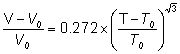

'If there is magic on this planet, it is contained in water'
Loren Eiseley, The Immense Journey, 1957)
There are several properties of water that do not constitute anomalies but are still remarkable. Until they are fully explained, they may be considered to be the result of coincidences. These unexplained properties are described on this page.
 Vapor pressure curves
Vapor pressure curves
 Pressure-density relationship
Pressure-density relationship
 Temperature-volume change relationship
Temperature-volume change relationship
 Temperature-viscosity relationship
Temperature-viscosity relationship
 Temperature-enthalpy of vaporization relationship
Temperature-enthalpy of vaporization relationship
 Logarithmic relationships emanating from 228 K
Logarithmic relationships emanating from 228 K
'...water has many queer and unique properties...' Albert Szent-Georgi, 1957
Many formulations give the vapor pressure of icea and water over various temperature ranges, mostly involving many empirical parameters. However, the following approximate formulae are curious and give approximately straight-line Log-Log plots of integral gradients 12, 8, and 4 with only physically meaningful parameters. The points are experimental data [70]b, and the lines show the equations (T is the scaled temperature given in the power expressions, see later, and the LogT values have been shifted so that the LogP values show a continuous function).
The vapor pressure of water and ice with 'reduced' temperature, showing three approximate power laws,
12th over ice, 8th over water (-15 °C - 100 °C), and 4th over water (above 100 °C)
The vapor pressure of ice is approximately given by the following relationship between pressure (atm) and temperature (K). T0 is 126 K, approximately the temperature for the phase change between glassy amorphous ice and deeply supercooled amorphous water (136 K; the glass transition temperature). Bpt and Mpt are the boiling points and melting points of water.
The vapor pressure of water (-15 °C - 100 °C) is approximately given by the following relationship between pressure (atm) and temperature (K). T1 is 162 K which is approximately the temperature for the phase change between glassy amorphous water and cubic ice (160 K).
The vapor pressure of water (100 °C - 374 °C, Critical point) is approximately given by the following relationship between pressure (atm) and temperature (K).

These power laws not only obey the rule of thumb that candidate power laws should exhibit an approximately linear relationship on a log-log plot over at least two orders of magnitude in both the x-axes and y-axes [1769], but also contain the curious integral relationship between the exponents, both factors indicating that these relationships have a mechanistic physical cause.
I am grateful to Frank Grimer for pointing me at these relationships.
The proportionality between the logarithm of the vapor pressure and the reciprocal temperature for liquid water is near constant for its complete span from supercooled water through to the critical point, as shown below with data from [1802, 1803]. The red line follows the experimental (or theoretical) data, whereas the underlying blue line is the fitted straight-line relationship.
The logarithm of the vapor pressure and the reciprocal temperature for liquid water
[Back to Top  ]
]
The density of liquid water tends towards an integral 6th power relationship with respect to pressure.
where P is the pressure (MPa), P0 is 378 MPa, T is the temperature (K), T0 is 85 K, and ρ is the density (g/mL).
This relationship is shown below (P' is the scaled pressure, that is, the left side of the above expression) as the dashed lines, with the colored lines being the experimental data. The lines for 20 °C - 60 °C fit well, but the power increases from 6 at lower and higher temperatures. The best fit is thus around the compressibility minimum at 46.5 °C. The extrapolated density at zero T and P is 1.28 g ˣ mL−1 which is close to the density for very high-density amorphous ice (1.25 g ˣ mL−1) with P0 and T0 being close to the conditions required for its formation.
Densities of water tend towards a 6th power law dependent on temperature and pressure
As this power-law does not obey the rule of thumb that candidate power laws should exhibit an approximately linear relationship on a log-log plot over at least two orders of magnitude in both the x-axes and y-axes [1769], it seems likely that this relationship is purely empirical.
I am again grateful to Frank
Grimer for pointing me at this relationship.
[Back to Top  ]
]
The incremental volume change increases as the square-root(3) power of the temperature above the temperature (T0, 3.984 °C) of minimum volume (V0, 1.00003 g ˣ mL−1)

as shown below, where the solid blue line follows the experimental data, and the dashed yellow line shows the above equation.
Volume change increases as the square-root(3) power of the temperature
The square-root(3) term is related to the Vesica Pisces, being the ratio of the long to short diameter of intersecting expanded icosahedral water clusters (the short diameter being the distance between the centers of neighboring dodecahedra and the long diameter associated with a plane of water molecules between the two pentameric boxes (Figure 3h) joining them.
I am again grateful to Frank
Grimer for showing me this relationship.
[Back to Top  ]
]
The dynamic viscosity varies with the temperature above a baseline temperature, viscosity = (T-T0)−1.637 for H2O and viscosity = (T-T0)−1.623 for D2O; where T0 = 225.4 for H2O and 231.9 for D2O, both these values being close to their respective homogeneous nucleation temperatures. The exponents are close to the golden mean, (1+√5)/2 (= 1.618).
Log10(T-T0) vs log(viscosity) data
In the graph above, H2O values are shown by the green squares (red line), and D2O values are indicated by the blue diamonds (blue line).
As this power-law does not quite obey the rule of thumb that candidate power laws should exhibit an approximately linear relationship on a log-log plot over at least two orders of magnitude in both the x-axes and y-axes [1769], it seems possible that this relationship is curious but purely empirical. This power-law has been investigated using new viscosity data [2414].
Similar straight line graphs also exist for Log-Log relationships involving changes in diffusivity, isothermal compressibility, and proton NMR relaxation, with respect to temperature for liquid and supercooled liquid water (see below).
[Back to Top  ]
]
Temperature versus enthalpy of evaporation
Remarkably the enthalpy of vaporization for liquid water reduces almost linearly with increasing temperature below 100 °C, as the data graphed right demonstrates [906, 1934]. Note that fully hydrogen-bonded water molecules, in liquid water, must break two bonds per molecule to evaporate, so the average hydrogen bond energy given by this line is about 22.5 kJ ˣ mol−1 at 0 °C.
This relationship has been described as showing the linear relationship of the hydrogen bond strength in water with temperature [1935]. At higher temperatures, it is assumed that the greater loss of enthalpy with temperature is due to fewer hydrogen bonds per water molecule. This linear relationship generally agrees with the quadratic relationship found with the hydrogen bond length of hexagonal ice with temperature over the range -100 °C to 0 °C [1935], as bond length is thought approximately quadratically related to bond strength.
[Back to Top  ]
]
Many properties of water behave strangely at low temperatures. In particular, they may apparently obey double logarithmic relationships heading towards the experimental homogeneous nucleation temperature at about -45 °C [1886]. This is also close to the second critical point. The slopes of these lines and any intersections (not shown) are determined by the different scales used. Only the linearities of these lines with the experimental data points shown are important.
Double logarithmic of some water properties, redrawn from [2414]
The equations giving the property values (VT) with the reduced temperature TS where TS = (T/Tg)-1 where T is the temperature (K), and Tg is 228 K (and close to the experimental homogeneous nucleation temperature) have the form:
VT = A ˣ ((T/Tg)-1)λ = ATSλ [1886]
| Property | Units | Pre-exponential factor, A |
Exponent, λ | Range, °C | Value, 0 °C from equation |
| Isothermal compressibility | βT ˣ 106, bar−1 | 29.65 | -0.349 | -26 ≈ +10 | 52.2 ˣ 10−6 ˣ bar−1 |
| Density | ρ, g ˣ cm−3 | 1.0497 | 0.0243 | -34 ≈ -23 | 1.009 g ˣ cm−3 |
| Diffusion constant | D ˣ 105, cm2 ˣ s−1 | 10.34 | 1.454 | -31 ≈ -9 | 0.977 ˣ 10−5 cm2 ˣ s−1 |
| Viscosity | η , cP | 0.1669 | -1.476 | -24 ≈ 0 | 1.83 cP |
| 0.1419 | -1.557 | 0 ≈ +125 | 1.78 cP | ||
| Proton spin-lattice relaxation time | T1(1H), s | 27.66 | 1.717 | -16 ≈ +146 | 1.71 s |
| Oxygen spin-lattice relaxation time | T1(17O), s | 0.0578 | 1.80 | -31 ≈ +180 | 3.12 ms |
| Dielectric relaxation time | τD ˣ 1012, s | 0.9822 | -1.791 | 0 ≈ +60 | 17.96 s |
The temperature dependences on thirteen basic characteristics of water (self-diffusion coefficient, spin-lattice relaxation time, dynamic viscosity, shear viscosity, dielectric relaxation time, proton spin-spin relaxation time, isobaric heat capacity, density, speed of sound, isothermal compressibility, surface tension, saturated vapor pressure, fractions of free and bound molecules) in the range of−30 °C to 100 °C were approximated by the bimodal function [3729],
fa=Т±βexp(±Ea/RT).
where T is the temperature (K), Ea is activation energy, and β is a power coefficient (0, ±1/2, ±3/2, ±2). On further analyses, water properties and anomalies were found based on fluctuations of hydrogen bond dipoles and long-range interactions between them [4282],
[Back to Top  ]
]
Home | Site Index | Anomalies of water | Water: Introduction | The icosahedral water clusters | LSBU | Top
This page was established in 2003 and last updated by Martin Chaplin on 5 November, 2021